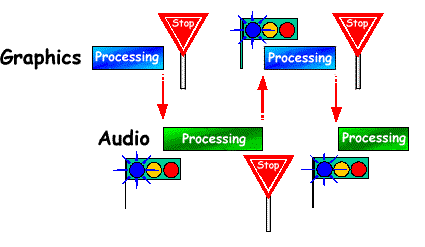

An N64 game has both a graphics and an audio process. On the N64, a graphics process flows from the CPU to the RSP to the RDP, and an audio process flows from the CPU to the RSP.
Also, while the graphics process sometimes requires more than one frame to draw one scene, the audio process must be provided in each and every frame. Otherwise, the sound pauses inappropriately or causes popping noises.
If a graphics process is intensive, the RSP may be kept occupied by it and therefore fail to yield to the audio process. The Scheduler thread prevents this problem from occurring.
The Scheduler thread is a high-priority thread that can grab the attention of the CPU, RSP, and RDP at any time because it has a higher priority than a currently executing thread. When the Scheduler thread receives a VI retrace (vertical synchronization interrupt) message, it analyzes the current RSP status. If the RSP is running a graphics process, the Scheduler saves the current state of the graphics process, and then the Scheduler yields the RSP to the audio process. When the audio process finishes, the Scheduler restores the graphics process at the point where it was interrupted. In other words, the Scheduler controls RSP traffic as shown in this illustration:

Nintendo® Confidential
Copyright © 1999
Nintendo of America Inc. All Rights Reserved
Nintendo and N64 are registered trademarks of Nintendo
Last Updated March, 1999